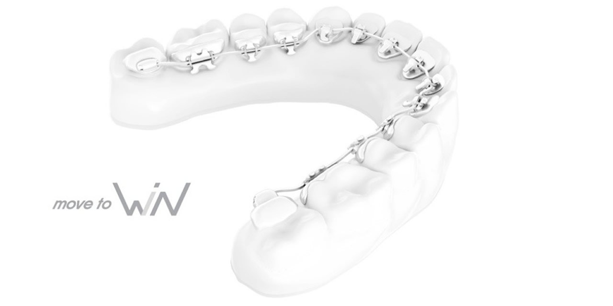
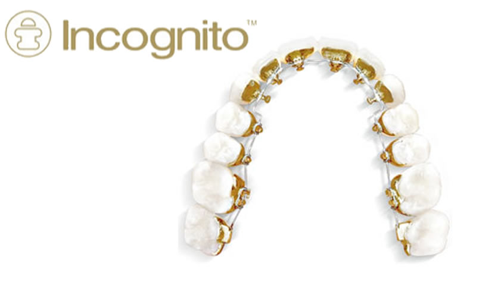

Aparaty lingwalne (językowe) to leczenie dla wszystkich!
Zapraszamy dzieci, młodzież oraz dorosłych
Termin ,,lingwalny” zaczerpnięty został z języka łacińskiego i oznacza usytuowanie aparatu w jamie ustnej od strony języka. Istotą techniki lingwalnej jest prowadzenie leczenia w taki sposób, aby zamki oraz elementy aparatu pozostawały niezauważalne.
Dlatego przez cały okres użytkowania aparaty lingwalne pozostają niewidoczne, pozwalając Pacjentom na dyskretne leczenie, swobodny i niczym nieskrępowany uśmiech, a także niczym niezaburzony styl życia.
Już nie musisz martwić się o swój wygląd w czasie leczenia!

Zalety aparatów językowych
- całkowicie niewidoczne aparaty
- wykorzystywane do leczenia wszystkich wad zgryzu
- odpowiednie dla każdego bez względu na wiek
- doskonałe rezultaty leczenia
- skrócenie całkowitego czasu leczenia, a tym samym liczby wizyt
- łatwiejsze utrzymanie higieny
- mniejsze ryzyko próchnicy (powierzchnie językowe zębów są bardziej odporne na demineralizację w porównaniu z powierzchniami wargowymi)
- komfort dla warg i policzków
- mniejsze rozmiary zamków, lepsza adaptacja
- możliwość wizualizacji efektu końcowego leczenia jeszcze przed założeniem aparatu

Systemy aparatów językowych dzieli się na:
- indywidualnie projektowane dla Pacjenta tj. Incognito, Incognito Lite oraz aparat Win, Lingualjet – Incognito –indywidualnie projektowane zamki przy użyciu technologii 3D a następnie odlewane ze stopu złota i irydu w laboratorium Bad Essen (Niemcy). Są biokompatybilne oraz zapewniają odpowiednie właściwości fizyczne aparatu. Do zamków podobnie jak w klasycznych aparatach montowane są łuki, czyli elementy przenoszące siły oddziaływujące na zęby.- Incognito Lite – to uproszczona wersja aparatu Incognito, liczba zamków zredukowana jest do 6 – 8 przyklejanych do zębów szczęki lub żuchwy. Aparat przeznaczony jest do leczenia nieskomplikowanych wad zgryzu (tj. stłoczenia, szparowatość, recydywy).
- Tzw. standardowe 2D,3D, STB itp. – to standardowe aparaty lingwalne. W tym systemie zamki nie są przygotowywane indywidualnie dla Pacjenta, dlatego stosujemy je w leczeniu prostych wad zgryzu oraz drobnych nieprawidłowości zębowych.